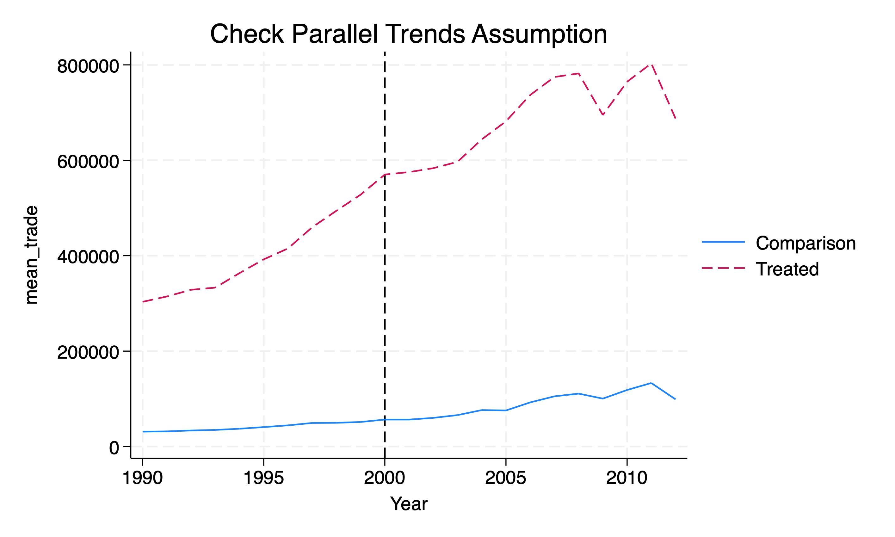

Chapter 3 xtdidregress commmands
In addition to using xtreg or reg for estimating our \(\delta^{ATET}_{DD}\), we can use some built in Stata commands instead. These commands include xtdidregress and didregress.
For additional information we can use the help command.
Stata’s help page provides us with the following information:
For repeated cross-sections:
didregress (ovar omvarlist) (tvar[, continuous]) [if] [in] [weight], group(groupvars) [time(timevar) options]
For panel data:
xtdidregress (ovar omvarlist) (tvar[, continuous]) [if] [in] [weight], group(groupvars) [time(timevar) options]
Where 1. ovar is our outcome of interest 2. omvarlist is a list of our explanatory covariates 3. tvar is a binary indicating treatment status or a continuous indicating intensity of treatment 4. groupvars are categorical variables indicating treatment level, such as individual, state, etc. 5. timevar is our time variable, such as year
3.1 World Development Index
We will use the World Development Index to assess the impact of a trade policy in 2000 on total amount of trade (imports + exports) in millions of 2005 US dollars. These data are provided by Princeton.
/Users/Sam/Desktop/Econ 672/Data
Contains data from wdipol.dta
Observations: 4,542
Variables: 12 26 Mar 2026 19:15
----------------------------------------------------------------------------------
Variable Storage Display Value
name type format label Variable label
----------------------------------------------------------------------------------
year int %10.0g Year
country str24 %24s Country Name
gdppc double %10.0g GDP per capita, PPP (constant 2005
international $)
unempf double %10.0g Unemployment, female (% of female
labor force)
unempm double %10.0g Unemployment, male (% of male labor
force)
unemp double %10.0g Unemployment, total (% of total
labor force)
export double %10.0g Exports of goods and services
(constant 2005 US$)
import double %10.0g Imports of goods and services
(constant 2005 US$)
polity byte %8.0g polity (original)
polity2 byte %8.0g polity2 (adjusted)
trade float %9.0g Imports + Exports
id float %9.0g group(country)
----------------------------------------------------------------------------------
Sorted by: We will focus on years 1990 forward.
(1,136 observations deleted)
Exports of goods and services (constant 2005 US$)
-------------------------------------------------------------
Percentiles Smallest
1% 91.64278 45.02022
5% 245.0359 48.62297
10% 543.8475 52.79048 Obs 2,814
25% 2094.341 53.24336 Sum of wgt. 2,814
50% 8836.828 Mean 75432.49
Largest Std. dev. 182677.6
75% 57261.36 1649300
90% 198699.2 1665600 Variance 3.34e+10
95% 399759.2 1677840 Skewness 4.764539
99% 1036798 1776900 Kurtosis 31.56892
Imports of goods and services (constant 2005 US$)
-------------------------------------------------------------
Percentiles Smallest
1% 264.6554 94.23958
5% 538.7271 110.3702
10% 1031.108 129.2793 Obs 2,814
25% 2514.115 135.4336 Sum of wgt. 2,814
50% 10218.4 Mean 74643.16
Largest Std. dev. 194233
75% 56131.35 2144000
90% 182048.5 2151500 Variance 3.77e+10
95% 371224.2 2184900 Skewness 5.811369
99% 943900 2203200 Kurtosis 47.77702
Imports + Exports
-------------------------------------------------------------
Percentiles Smallest
1% 414.4894 139.2598
5% 828.4978 166.8271
10% 1613.88 183.3966 Obs 2,814
25% 4867.792 193.1237 Sum of wgt. 2,814
50% 19421.02 Mean 150075.7
Largest Std. dev. 374324.7
75% 115498.2 3750800
90% 382896.8 3757600 Variance 1.40e+11
95% 759593.4 3793300 Skewness 5.158498
99% 2001955 3961800 Kurtosis 37.13028Looking at combined imports and exports, the median amount of trade is 19.4 billion 2005 US dollars.
Now, we set our post period at 2000 or later. An indicator for when trade relations were normalized between the U.S. and China and China’s ascension into the World Trade Organization (WTO).
Next we will assign the treatment countries, which are the following western countries: Australia, Austria, Belgium, Canada, Denmark, Finland, France, Germany, Greece, Ireland, Italy, Luxembourg, Netherlands, New Zealand, Norway, Portugal, Spain, Sweden, Switzerland, United Kingdom, and United States.
gen treatment = 0
replace treatment = 1 if country == "Australia" | country == "Austria" | country == "Belgium" | country == "Canada" | country == "Denmark" | country == "Finland" | country == "France" | country == "Germany" | country == "Greece" | country == "Ireland" | country == "Italy" | country == "Luxembourg" | country == "Netherlands" | country == "New Zealand" | country == "Norway" | country == "Portugal" | country == "Spain" |country == "Sweden" | country == "Switzerland" | country == "United Kingdom" | country == "United States"Next, we will set up the difference-in-differences interaction.
Now we need to establish our panel, but we need to use the encode command on countries so we can use the xtset command.
*Encode country
encode country, gen(countrynum)
*Set Panel
sort countrynum year
xtset countrynum yearPanel variable: countrynum (unbalanced)
Time variable: year, 1990 to 2012, but with a gap
Delta: 1 unitOur panel is unbalanced, which means we do have gaps among some of the countries.
We will first start with our tried and true method with xtreg and use the fe option, and we will cluster our standard errors at the unit of observation level.
Fixed-effects (within) regression Number of obs = 2,814
Group variable: countrynum Number of groups = 153
R-squared: Obs per group:
Within = 0.2476 min = 1
Between = 0.2331 avg = 18.4
Overall = 0.1877 max = 23
F(23, 152) = 2.88
corr(u_i, Xb) = 0.2187 Prob > F = 0.0001
(Std. err. adjusted for 153 clusters in countrynum)
------------------------------------------------------------------------------
| Robust
trade | Coefficient std. err. t P>|t| [95% conf. interval]
-------------+----------------------------------------------------------------
treat_post | 254619.5 84665.83 3.01 0.003 87345.69 421893.2
|
year |
1991 | 11417.79 3273.274 3.49 0.001 4950.798 17884.77
1992 | 14691.17 4183.539 3.51 0.001 6425.782 22956.57
1993 | 17823.51 5089.347 3.50 0.001 7768.513 27878.5
1994 | 27212.01 6768.259 4.02 0.000 13840.01 40584.02
1995 | 36908.65 8577.682 4.30 0.000 19961.77 53855.52
1996 | 43697.3 9997.622 4.37 0.000 23945.06 63449.54
1997 | 53882.39 12313.33 4.38 0.000 29555.02 78209.75
1998 | 60352.96 13818.67 4.37 0.000 33051.5 87654.42
1999 | 67276.08 15777.22 4.26 0.000 36105.13 98447.04
2000 | 43940.78 12961.89 3.39 0.001 18332.06 69549.5
2001 | 45574.41 13023.31 3.50 0.001 19844.34 71304.49
2002 | 50357.95 14195.9 3.55 0.001 22311.21 78404.7
2003 | 58200.38 16052.8 3.63 0.000 26484.97 89915.79
2004 | 74493.25 18905.12 3.94 0.000 37142.52 111844
2005 | 87670.9 21325.73 4.11 0.000 45537.78 129804
2006 | 104994.9 24623.44 4.26 0.000 56346.51 153643.3
2007 | 121106.3 28005.54 4.32 0.000 65775.88 176436.6
2008 | 128370.5 29721.71 4.32 0.000 69649.48 187091.5
2009 | 104644.4 27073.14 3.87 0.000 51156.19 158132.7
2010 | 131099.8 33071.58 3.96 0.000 65760.48 196439.1
2011 | 149272.6 37479.36 3.98 0.000 75224.91 223320.4
2012 | 129456.8 24816.73 5.22 0.000 80426.54 178487.1
|
_cons | 56946.96 18846.82 3.02 0.003 19711.41 94182.51
-------------+----------------------------------------------------------------
sigma_u | 295226.32
sigma_e | 132684.6
rho | .83195335 (fraction of variance due to u_i)
------------------------------------------------------------------------------Our difference-in-difference estimator indicates that the change in trade policy increased total trade by 255 billion 2005 US dollars, which is statistically significant at the 1% level.
To visualize our parallel trends, we need to use egen to get the mean outcome by year for treatment and comparison groups. Next, we will visually inspect the parallel trends assumption with twoway line charts.
bysort year treatment: egen mean_trade = mean(trade)
twoway line mean_trade year if treatment == 0, sort || ///
line mean_trade year if treatment == 1, sort lpattern (dash) ///
legend(label(1 "Control") label(2 "Treated")) ///
xline(2000) title("Check Parallel Trends Assumption")
3.2 xtdidregress
We have other commands for estimating difference-in-differences, such as the xtdidregress and didregress commands. These commands will estimate our \(\delta^{ATET}_{DD}\) of interest.
Why should we use this command? They provide helpful post-estimation commands for testing the parallel trends assumption!
Treatment and time information
Time variable: year
Control: treat_post = 0
Treatment: treat_post = 1
-----------------------------------
| Control Treatment
-------------+---------------------
Group |
countrynum | 132 21
-------------+---------------------
Time |
Minimum | 1990 2000
Maximum | 2006 2000
-----------------------------------
Difference-in-differences regression Number of obs = 2,814
Data type: Longitudinal
(Std. err. adjusted for 153 clusters in countrynum)
------------------------------------------------------------------------------
| Robust
trade | Coefficient std. err. t P>|t| [95% conf. interval]
-------------+----------------------------------------------------------------
ATET |
treat_post |
(1 vs 0) | 254619.5 84665.83 3.01 0.003 87345.69 421893.2
------------------------------------------------------------------------------
Note: ATET estimate adjusted for panel effects and time effects.
Note: Treatment occurs at different times.We get the same result, such that trade increases $254,619.5 millions or 255 billion 2005 US dollars
We can also add some covariates in case the parallel trends is conditional on controlling for covariates.
Treatment and time information
Time variable: year
Control: treat_post = 0
Treatment: treat_post = 1
-----------------------------------
| Control Treatment
-------------+---------------------
Group |
countrynum | 132 21
-------------+---------------------
Time |
Minimum | 1990 2000
Maximum | 2006 2000
-----------------------------------
Difference-in-differences regression Number of obs = 2,804
Data type: Longitudinal
(Std. err. adjusted for 153 clusters in countrynum)
------------------------------------------------------------------------------
| Robust
trade | Coefficient std. err. t P>|t| [95% conf. interval]
-------------+----------------------------------------------------------------
ATET |
treat_post |
(1 vs 0) | 253104.1 85410.71 2.96 0.004 84358.69 421849.5
------------------------------------------------------------------------------
Note: ATET estimate adjusted for covariates, panel effects, and time effects.
Note: Treatment occurs at different times.Our estimate is little change after controlling for unemployment and political system of the country. Our estimate is \(\hat{\delta}^{ATET}_{DD}=\$253B\).